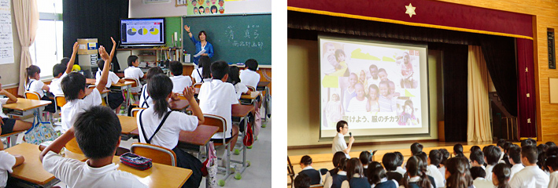
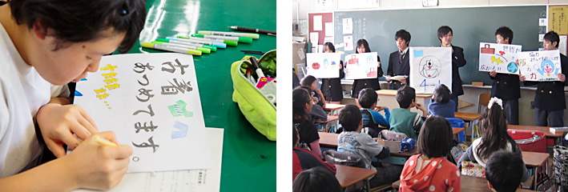
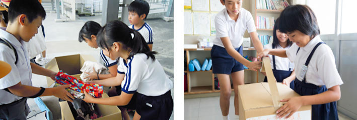
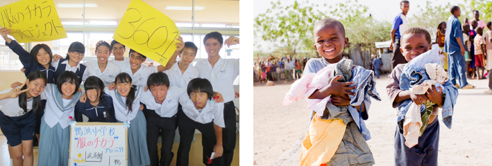

活動内容・流れ
プロジェクトは下記のSTEP1～STEP4のように実施されます。
 ユニクロ・ジーユー社員による出張授業（6月～7月）
ユニクロ・ジーユー社員による出張授業（6月～7月）
ユニクロ・ジーユーの社員が学校を訪問し、講師となって出張授業を実施します。

- 内容：
- 服にはどのようなチカラがあるのか、回収した服はどのように役立てられているのかなど、写真や映像をお見せしながら、パワーポイントを使って授業をします。子どもたちが、自分たちにもできる社会貢献があるということに気づくきっかけをつくります。
- 対象：
- 日本国内の小学校、中学校、高等学校（一貫校、特別支援学校など含む）
※教材は小学生（5～6年生向け）と中高生用の2種類を用意しています。 - 時間：
- 45分～60分
- 枠組み：
- 授業（クラス単位・学年単位いずれも可）、生徒会活動、委員会活動、部活動など制限はございません。
- 出張授業実施日：
- 【プロジェクトに参加】をご覧ください。
※授業では、プロジェクター・スクリーン・PC・スピーカーをご用意ください。
※予め学校に教材(PDF資料と動画データ)をお送りいたします。
学校のPCにて再生できるようにご準備をお願いします。
校内・地域への呼びかけ（授業後～11月）
いつ、どこで、だれに、どうやって呼びかけるか。子どもたちがアイディアを出し、協力を呼びかけます。

役割分担を決め、ポスターや回収ボックスなどを作成します。校内放送や全校集会で学校内に呼びかけたり、近隣の小学校や幼稚園を訪問し、手作りの紙芝居で服のチカラを伝えて協力を呼びかけたりします。
回収・発送（～11月末まで）
子ども服をいざ回収！その後、段ボールにつめて指定の倉庫に発送します。

回収する方法は学校により様々です。手作りの回収ボックスを学校の玄関や廊下などに設置する、地域の小学校・幼稚園で回収させてもらう、学園祭や保護者会で回収するなどの方法があります。回収後は段ボールで指定の倉庫へ発送してください。服は倉庫で選別や梱包をされ、難民キャンプへ届けられます。
- 衣料回収期間：
- 出張授業実施後から2019年11月末までの期間で自由に設定していただけます。
※2019年11月30日（土）までに必ず発送を完了してください。 - 回収商品：
- 子ども服全般。サイズ、ブランドは問いません。(下着・小物類は不可)
※洗濯された状態の子ども服を回収してください。
※集めた子ども服を仕分けする必要はありません。
※回収衣料の発送用段ボール箱や発送の際に貼付する伝票は、事前に学校にお送りします。
段ボール代や回収した衣料の送料の負担は必要ありません。
報告（1月～）
校内や地域に成果の報告と感謝を。
難民キャンプに寄贈した様子をまとめたフォトレポートを各学校にお届けします。

子ども服を回収し発送が完了した後、ご協力いただいた方々に「○○枚集まりました。ご協力ありがとうございます！」などと報告します。
2020年1月に各学校にフォトレポートをお届けします。
活動の振り返りや、協力してくれた方々への報告・お礼に活用していただけます。